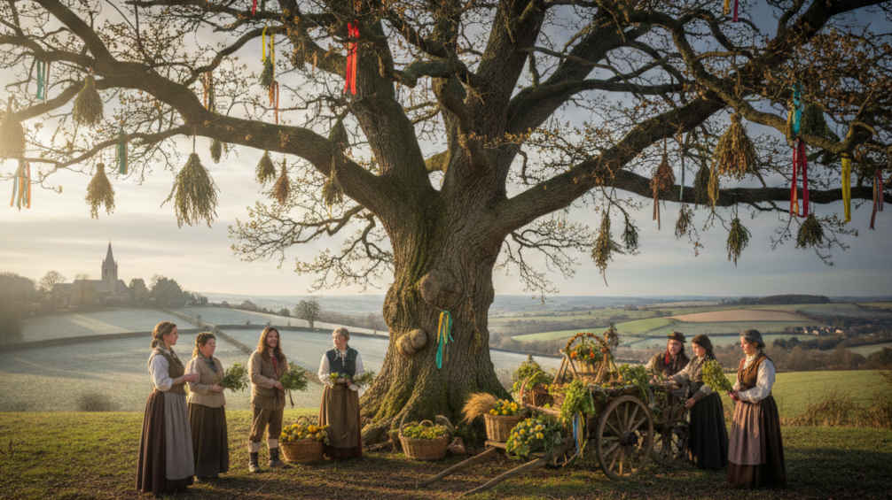

Pe’ la Candelora dall’inverno semo fora
Ma se piove e tira vento
Dell’inverno semo dentro.
Arispose una vecchiaccia:
l’inverno fino a Pasqua.
Arispose la serva del prete:
l’inverno anzinante ca ‘n se mete.
Arispose ‘l vecchio Saturno
Che l’inverno fin a giugno.
Ma se piove a venticello
Avremo un lungo invernicello
Nell’ambito di quella che si potrebbe chiamare la meteorologia popolare il 2 di febbraio (la Candelora) si cominciavano a fare le previsioni sulla fine dell’inverno e sull’arrivo della primavera, come si può vedere, con molta fantasia. Prevedere il tempo che avrebbe fatto era uno degli esercizi più frequenti che il contadino doveva compiere quasi quotidianamente, attività che nel corso di millenni ha evidentemente prodotto e sedimentato una grande messe di nozioni, di collegamenti, di pronostici più o meno standardizzati, costruendo un sistema basato essenzialmente sull'osservazione plurimillenaria della natura e sulle conseguenze che i più differenti fenomeni naturali potevano avere sul lavoro nei campi. Associabile a questa costante attività era quella della mitopoiesi che produceva miti, leggende, racconti e narrazioni varie, spesso legate ai luoghi, ovvero elementi che, di generazione in generazione, andavano a tradursi in fattori identitari imprescindibili per giustificare la propria esistenza nel mondo. e propiziarsi l’andamento della stagione. Queste attività erano praticamente diffuse ovunque e la conoscenza che ne derivava - basata sulla trasmissione orale nei microcontesti - forgiava sia il sapere dei singoli individui, che l’immaginario collettivo fondato su una dimensione agrosilvopastorale. Gli studiosi di antropologia e di folklore, sin dalle origini delle loro discipline, (origini attestabili all’incirca tra la prima e la seconda metà dell’Ottocento), si sono molto spesso dedicati a indagare con diversi strumenti anche gli aspetti rituali e il loro collegamento con la vita dei popoli o delle comunità. Quindi a cavallo tra gli ultimi due secoli e poi lungo tutto il secolo scorso si è sviluppata una massa notevole di studi e ricerche riguardanti gli aspetti del rito, della festa, della parentela, della socialità, nonché dei canti, delle fiabe, dei proverbi, dei giochi ecc. ecc., con una attenzione sia ai territori europei che a quelli extraeuropei (“acquisiti” dall’Occidente grazie alle dominazioni coloniali). La conseguenza è stata che il continuo approfondimento ha prodotto una sorta di turbinio continuo di metodi e di parametri e di rinnovamenti frequenti che non starò certamente qui ad illustrare. Dirò soltanto poche frasi, magari riprendendo il discorso in altre occasioni.
Il Rito.
Nel corso del tempo il rito ha assunto un’importanza primaria come oggetto di studio, perché è stato visto in primis come tratto culturale originario, indicante cioè le antiche origini di una cultura e del popolo relativo, (in collegamento con l’evoluzionismo di impronta darwiniana); in secundis come “fatto sociale totale”, vale a dire come elemento in grado di assorbire e di restituire i contenuti completi di una società. E’stato anche visto come il mezzo attraverso cui si è tentato di dominare gli elementi avversi della natura, o come lo strumento per fronteggiare le situazioni più pericolose per la comunità e per i suoi individui, con il carico di angoscia e di paura della morte che esse comportano. E’ stato poi descritto e interpretato come collante sociale, ovvero come rinforzante l’appartenenza degli individui alla società, e in definitiva come fattore imprescindibile per il mantenimento dell’equilibrio sociale e politico. In questo senso ciò che caratterizza il rito è il fatto di essere un’azione pubblica e collettiva capace di regolare i rapporti sociali, in quanto induce gli individui a conformarsi ai comportamenti socialmente prescritti e rafforza nei partecipanti il senso di appartenenza al corpo sociale (per i viterbesi può essere esemplificativo il grido del capofacchino durante il trasporto della Macchina di Santa Rosa: “Séte tutti d’ un sentimento? Sì!”. Che non è solo un segnale lanciato ai facchini strettamente legato al trasporto ma che si allarga a tutti i presenti, indicando una forte appartenenza e una identità). Per concludere questa breve carrellata, c’è da aggiungere che il rito può essere visto anche come il momento in cui si manifestano, in modo simbolico, i conflitti e gli antagonismi presenti in un determinato contesto. La loro rappresentazione metaforica, teatralizzata e spesso drammatizzata, “destorificata” e“agìta” su un altro terreno molto partecipato, produce come una partitura in cui mettere alla prova, ripetutamente e ciclicamente, i valori della comunità d’appartenenza, in una dimensione processuale di definizione e ridefinizione continua che prevede anche trasformazioni. Il rito diventa una sorta di “testo”, intessuto di una trama di significati, in cui gli individui che vi partecipano danno forma espressiva compiuta a esperienze, norme e valori presenti nella società, facendo in modo che, pure se presentati in maniera metaforica, siano percepiti con forza e con chiarezza, laddove nella vita quotidiana rimarrebbero invece impliciti.
Riti primaverili
Per comodità d’analisi e per tentare di trovare elementi di riflessione che individuino aspetti più o meno comuni nel nostro territorio del viterbese, possiamo tentare di circoscrivere qui il complesso dei riti cosiddetti primaverili, un nucleo portante del ciclo annuale, con particolare riferimento alle pratiche rituali che prevedono un contatto forte con la natura, nella fattispecie con l’elemento vegetale Stiamo parlando di culti e di tutto un variegato tessuto rituale in cui sono implicate non solo figure religiose come i santi e le Madonne, ma alberi, fiori, fronde, elementi vegetali. Questi culti e questi riti sono diffusi un po’ ovunque, anche se qualcuno, inevitabilmente, nel corso del tempo è scomparso. Io qui posso segnalare che, tra i grandi antropologi dell’800, alcuni si sono occupati specificamente di questi aspetti. Uno su tutti è James Frazer, antropologo scozzese della seconda metà del secolo XIX, di scuola evoluzionista, che ha tracciato un quadro molto ampio della diffusione del culto dell’albero. Il suo libro più famoso si chiama Il ramo d’oro. Studio sulla magia e la religione, uscito per la prima volta nel 1890, e ampliato con edizioni successive fino al 1915, raggiungendo più volumi. In esso Frazer fa una lunga elencazione di luoghi in cui sopravvivono le vestigia di culti degli alberi incarnati da vari spiriti della vegetazione ed è un numero impressionante. Tra le tante, queste alcune sue parole che seguono un lungo elenco di culti degli alberi nel mondo:
Da quanto detto finora circa le proprietà benefiche comunemente attribuite agli spiriti degli alberi, è facile comprendere come tradizioni come quella del “maggio” fossero tanto diffuse e importanti nelle feste popolari dell’Europa contadina. In primavera (…) esisteva e ancora esiste l’usanza di andare nel bosco a tagliare un albero da portare al villaggio, dove viene innalzato, fra il giubilo generale; o di appendere delle fronde verdi in ogni casa. Il tutto, allo scopo di rendere la comunità partecipe dei benefici che lo spirito dell’albero ha il potere di elargire. Ecco perché in alcune località si pianta un albero del maggio davanti ad ogni casa, o si reca di porta in porta quello che appartiene all’intero villaggio, cosi che tutti abbiano la loro parte di fortuna. Gli esempi sono infiniti.1
C’è stato un tempo, negli studi antropologici del Novecento, in cui si misurava tutto con il metro di Frazer, nel senso che tutto era interpretato come un residuo di sopravvivenze pagane: tutto era ricollegabile ad antichi riti precristiani; tutto era tenuto insieme da una sorta di tessuto di paganesimo ancestrale. C’era un richiamo continuo alle antiche divinità, paragoni frequenti tra dei precristiani e culti cristiani successivi, come per esempio il paragone tra Adone e Cristo o tra le divinità femminili della fertilità della terra e la Madonna. Il paragone evoluzionista prevedeva che i tre momenti fondamentali dello sviluppo umano erano basati sulla magia, sulla religione e sulla scienza. Tre stadi, fondamentali per tutti i popoli, che segnavano l’avanzare della civiltà, con un processo di sviluppo tendenzialmente simile ovunque.
C’è stato anche un altro tempo in cui, parlando dei riti primaverili (e non solo) si è invece ragionato sulla identità, sulla scomparsa dell’orizzonte contadino e sulla trasformazione della nostra società industriale prima e postindustriale poi. Sul cambiamento dei ruoli, degli stili di vita, delle forme di partecipazione alla vita comunitaria, sulla scomparsa della socialità tradizionale. Che fine stava facendo il mondo contadino con tutte le implicazioni socio-culturali ad esso collegate Le sue tradizioni, il suo folklore, la sua espressività? In quale prospettiva operavano le dinamiche sociali, quelle socio-economiche, come si ristrutturavano i significati, come si trasformavano le feste e i riti del mondo contadino?
Oggi viviamo nel mondo globalizzato in cui il mercato è diventato preponderante e in cui tutti si debbono confrontare con tutti, sempre. Oggi tutto può essere proposto su un palcoscenico ampio, quello della rete.
Tutto è globalizzato, ma tutto ciò che ruota intorno ai piccoli mondi locali viene considerato importante e da difendere. Ad una sempre più invasiva globalizzazione si risponde spesso con una tenace resistenza che prevede una difesa delle specificità locali. Nel mondo in cui si rischia di essere tutti uguali, tutti sentono il bisogno di distinguersi, di valorizzare le proprie specificità.
Tenacemente sono stati conservati riti e tradizioni che le comunità hanno sentito come imprescindibili per la propria vita sociale.
I problemi che si aprirebbero sono tanti e complessi. E non certo esauribili in un breve articolo come questo. Rimandando ad altre occasioni vado a chiudere con un piccolo compendio in cui sono indicati riti che si svolgono nel viterbese che mettono in primo piano il rapporto con la natura, i pellegrinaggi locali lungo percorsi tradizionali, il rapporto fisico con ambienti naturali che culminano generalmente in santuari, il contatto diretto con alberi che vengono personificati fino ad identificarli con il genere (maschio-femmina) e a proclamarne il matrimonio, il rapporto con i fiori usati nelle infiorate ma anche per riti privati legati a pronostici amorosi oppure a comparatici o anche a pratiche di farmaceutica popolare.
Ecc.Ecc.
[Preavviso chi legge che l’elenco che segue è ben lungi dall’essere esaustivo, ma è presentato per far intuire al lettore la vastità di presenze rituali nelle nostre zone collegabili all’elemento naturale vegetale].
Piccolo dossier relativo a feste e riti che segnano il territorio
Premessa.
La Tuscia è un terra dove si sono mantenute tradizioni antichissime e dove gli aspetti naturalistici e ambientali non hanno subito sconvolgimenti profondi. Questo ha garantito uno sviluppo sostanzialmente armonioso, senza gravi strappi, e nello stesso tempo ha consentito che si perpetuasse un legame profondo con la terra, intesa proprio come luogo fisico. Tale legame ha prodotto una cultura intessuta di usanze, di pratiche, di modi di vita che oggi appaiono assai interessanti nell’ottica di una valorizzazione delle risorse locali, come antidoto al mondo sempre più standardizzato nei suoi invasivi processi di iperglobalizzazione.
Pellegrinaggio di S. Vivenzio (Blera). E’ una sorta di avventurosa esplorazione del territorio a piedi per circa 30 Km tra andata e ritorno, effettuata in una giornata, che porta i pellegrini ad attraversare la Valle del Biedano, a inerpicarsi per colline e forre, a camminare presso necropoli rupestri scavate nel tufo vulcanico della zona, a compiere i propri riti religiosi nella grotta di S. Vivenzio, (secondo la leggenda scavata dal santo nel suo volontario romitaggio) situata nell’area dell’antica città etrusca di Orcla (oggi Norchia) e della sua imponente necropoli. Fortissimo il legame dei pellegrini con la terra di cui conoscono ogni dettaglio e che fornisce loro piante e fiori per addobbi floreali delle vesti e dei bastoni che lungo la via vengono procurati. Si svolge due volte all’anno, il lunedì di Pasqua e la seconda domenica di maggio.
Pellegrinaggio di S. Famiano a Lungo (Gallese). Si svolge il 17 luglio dall’alba al primo pomeriggio ed è un pellegrinaggio a piedi per circa 14 Km tra andata e ritorno che porta i pellegrini al santuario di S. Famiano, dove la leggenda vuole che il santo abbia soggiornato in preghiera e dove ha fatto sgorgare una fonte miracolosa a cui tuttora i fedeli si abbeverano a scopo apotropaico e terapeutico. L’ambiente naturale, con molti pendii e scoscendimenti, si presenta isolato e pieno di vegetazione spontanea e denso di suggestioni paesaggistiche. E’ tradizione che i giovanissimi vi compiano una sorta di rito di iniziazione passandovi l’intera notte, nel buio e nell’isolamento.
Sposalizio dell’albero e Pellegrinaggio al Monte Fogliano (Vetralla)
E’ una cerimonia che si svolge l’8 di maggio e consiste in una simbolica celebrazione nuziale tra due alberi di alto fusto, un cerro e una quercia, ornati e uniti con veli e fiori selvatici, scelti tra quelli del bosco di Monte Fogliano, sulle pendici orientali del sistema vulcanico dei Monti Cimini, nei pressi del Lago di Vico. Il sito è raggiunto a piedi, o con altri mezzi, dai partecipanti. L’unione del maschile e del femminile, simboleggiata dall’unione dei due alberi, garantisce fecondità, prosperità e continuità storica, anche perché il rito serve, secondo la tradizione, a ribadire ogni anno il possesso del Monte Fogliano da parte del Comune di Vetralla.
Altri pellegrinaggi, processioni a santuari campestri si svolgono in numerose località della Tuscia, contrassegnate sempre da riti, alimentazione speciale con dolci e altre pietanze tradizionali, canti di tradizione orale, etc. Tra essi citiamo il pellegrinaggio al santuario di S. Michele a Vitorchiano, quello a Montecasoli a Bomarzo, quello notturno, con fiaccolata, al santuario della Madonna del Castellonchio a Graffignano, quello al Monastero di S. Eutizio a Soriano nel Cimino
Da segnalare inoltre:
- le poggiate del Lunedì dell’Angelo, (passeggiate campagnole fatte un po’ ovunque spontaneamente).
- Albero della Cuccagna a Villa Fontane (Valentano) 25 marzo Festa dell’Annunziata (tentativi di scalare un albero completamente spogliato di rami e corteccia e unto di grasso, per raggiungere la cima e guadagnare premi gastronomici)
-Tiratura del solco dritto (Valentano) vigilia di Ferragosto: (tracciatura con un aratro di un solco dritto lungo più chilometri in un grande campo, offerto alla Assunta come richiesta di protezione del futuro raccolto).
- Pranzo del Purgatorio Gradoli (mercoledì delle Ceneri, cibo come prodotto della terra)
- Pugnaloni (Acquapendente – terza domenica di maggio festa della Madonna del Fiore grandi pannelli artistici fatti unicamente con fiori e foglie. Fortissimo legame con i fiori che ha dato luogo anche a un Museo del Fiore)
Barabbata (Marta) - Pellegrinaggio alla Madonna del Monte con prodotti del lavoro dell’uomo. Ricca processione culminante nei doni alla Madonna che ciascun gruppo – casenghi, bifolchi, villani e pescatori - lascia sull’altare in offerta)
S. Isidoro di Latera Processione alla chiesa campestre del santo protettore degli agricoltori.
Infiorate del Corpus Domini . Presenti in 25 località: a Acquapendente, Barbarano Romano, Bolsena, Capodimonte, Castel Sant'Elia, Civitacastellana, Fabrica di Roma, Gallese, Grotte Santo Stefano, Ischia di Castro, La Quercia, Marta, Montefiascone, Nepi, Onano, Sutri, Tarquinia, Torre Alfina, Tuscania, Valentano, Vallerano, Vasanello, Vignanello, Viterbo, Vitorchiano Si svolgono principalmente in occasione della festa del Corpus Domini ma non solo,
Marcello Arduini
Marcello Arduini